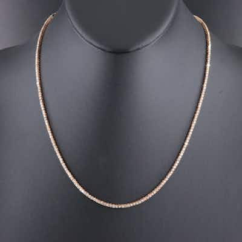

OUTPRICED14K 3.83 CTW Diamond Line Necklace
14K gold diamond line (tennis) necklace, 3.83 CTW round/square-cut diamonds, box clasp wit
0 min left
Current bid$1,463 · 60 bids
Est. value$1,454
Your max bid$842
All-in at max$1,003
Projected close$1,463
Margin at bid−$264
Details & price history →